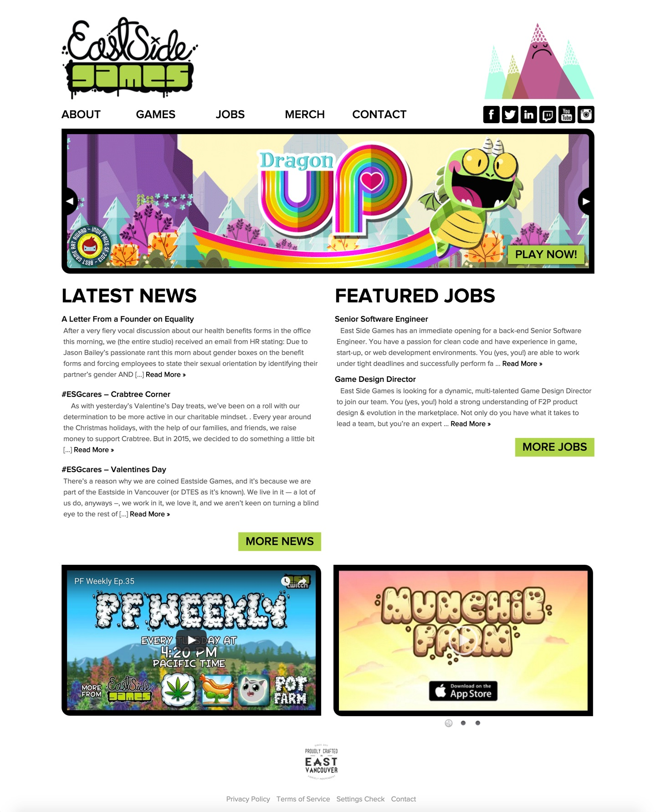

East Side Games
Fiercely independent social and mobile game development.
At East Side Games, I led product design on the company's Analytics and Core Tech teams, working with a multi-disciplinary team to deliver powerful internal tools for analytics, email campaign management, and customer service.
My main focus was on Mentor, our internal analytics platform, which was developed in order to satisfy the company's need for deep data analysis and real-time reporting. Later, I designed and built the front-end for Mastr Blastr, an email campaign management platform that integrated with user data from our games and allowed game teams to build custom campaigns based on player metrics. Following that, I once again tackled user experience design and front-end development for Aprl, an internal customer service tool that significantly improved the experience of supporting our players with issues they experienced in our games, giving our CS team the ability to easily manage and modify player data and interact with our customers.
I also enjoyed having the opportunity to lead web development for the East Side Games rebranding, working with veteran designer Nicholas Tay to implement a new brand strategy and website for the company. I re-worked our WordPress back-end to add new features, and implemented a responsive web design that created a significantly better experience for our visitors on mobile and tablet devices, where many of our games live.
The Results
Take a look at the final product.
More Projects
Check out what else I've been working on.


@ParkerBusswood: Love the idea of @startupvisaca. Lower barrier to entry, bring best #tech #startups to #Vancouver, and invest in their success. /cc @bwertz